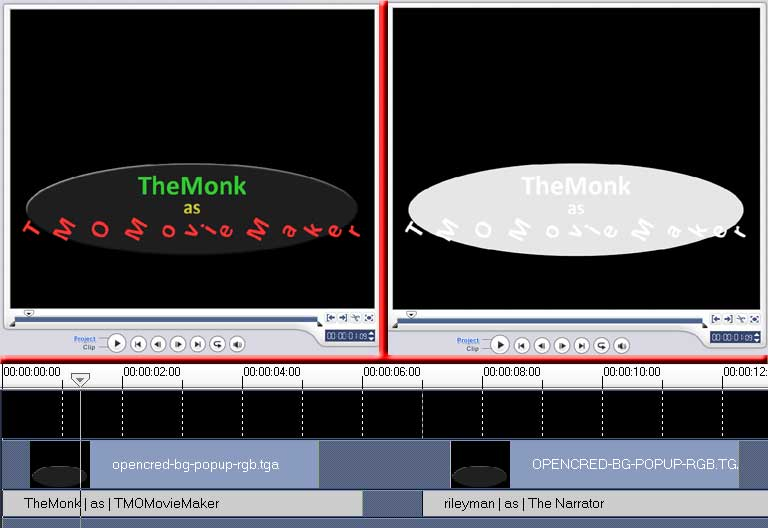
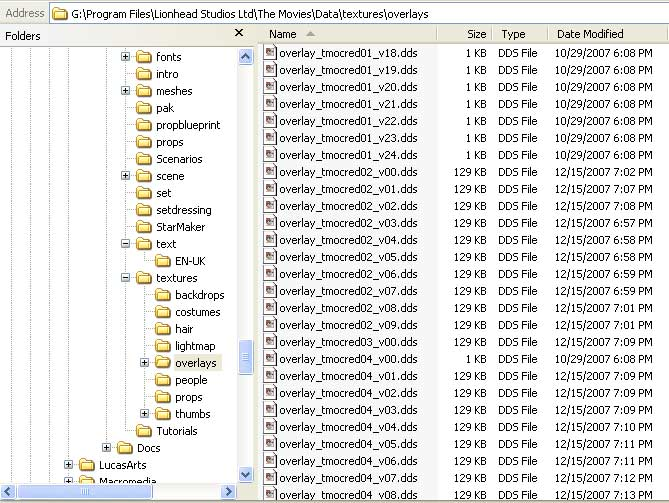

|
| Home | The Movie | Cast & Crew | Soundtrack | How-To Guide | Screenshots | Riley Entertainment |
Opening Credits
The opening credits animations were achieved using the title animations available in Ulead VideoStudio. The circular background behind the text was created in Adobe Photoshop. For the high-resolution version of the film, the full 30 fps remains as exported by VideoStudio.
Some special things needed to be done to get these animations into The Movies as overlays. Because these were transparent, I created two separated projects in VideoStudio. The first project contains the text and circular backdrop with the appropriate colours, with a black background. The second project was an exact copy, but changed the text to pure white, and the circular backdrop to a very light grey. Once these projects were exported as AVI files, they were brought into Photoshop and combined frame-by-frame. The correspond frame from the first project made up the RGB channel, while the second project made up the alpha channel.
Once I had a big list of overlays, I had to do some creative things to rename the overlays for use with the film. This sequence in the film uses a new technique that requires transparent animated overlays to cross multiple shots. To achieve this, you will have to re-think how you attach your overlays to each shot in Advanced Movie Maker.
Normally, you create an animation and attach it to a single scene. Here, you must create one long animation (or multiple animations that play back-to-back), and then split them up according to how you have edited your shots. Follow these steps:

Ulead VideoStudio projects. The RGB channel is on the left, the alpha channel on the right.

Final overlay filenames. In the opening credits sequence, we can see here that: shot 1 is 2.5 seconds, shot 2 is 1.0 seconds, shot 3 is a static overlay, etc. The DDS files that are 1Kb in size are fully transparent images, meaning the credits are not being displayed during that particular moment in the film.